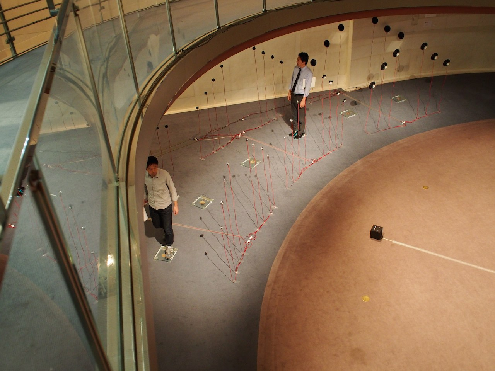

Polku is an interactive sound installation created by me and Jairo Acosta.
We made it site-specifically for the gorgeous Spiral Gallery together with Jairo Acosta. It was part of the Media Lab Helsinki exhibition "Sounds From Finland", organized by Pipsa Asiala, Shinji Kanki and Antti Ikonen.
Polku is a sound path consisting of six steps, surrounded by a forest of speakers. The sounds are bits of Finnish life, and by walking on the path the visitor can create their own soundscape based on their weight. The result is different depending on whether visitors are alone on the path, or if they have company.
The steps are hacked bathroom scales, with custom made PCB's (and of course LED's!) connected to an Arduino Mega and a main computer for running pure data.
